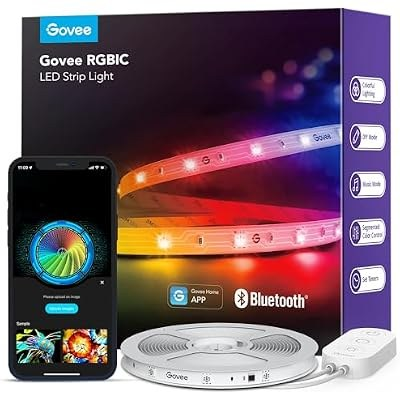
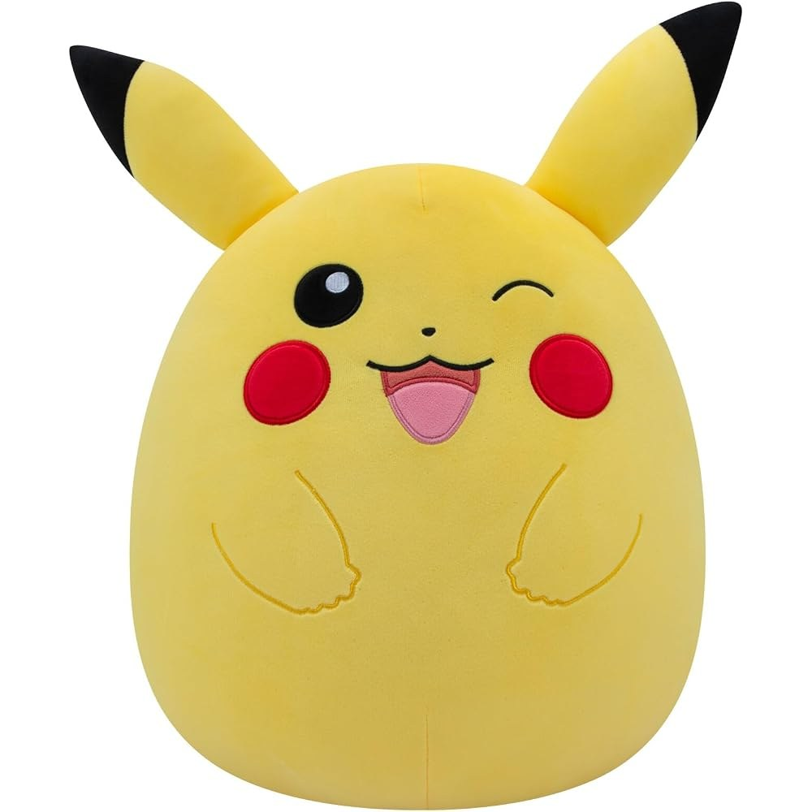
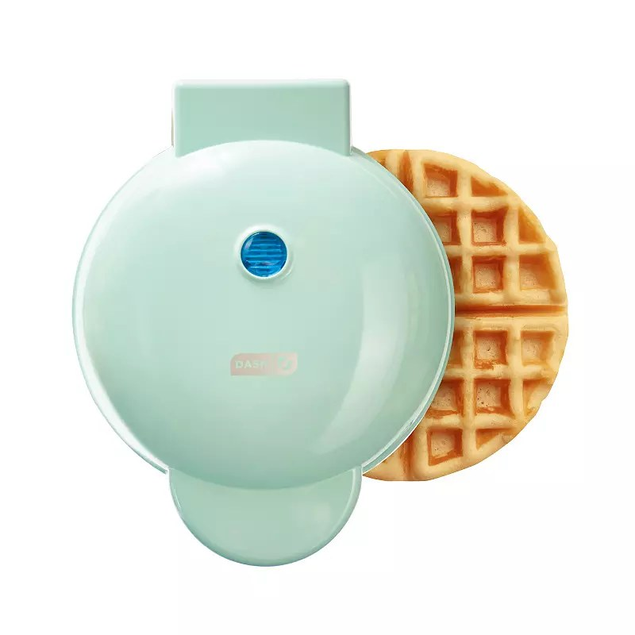
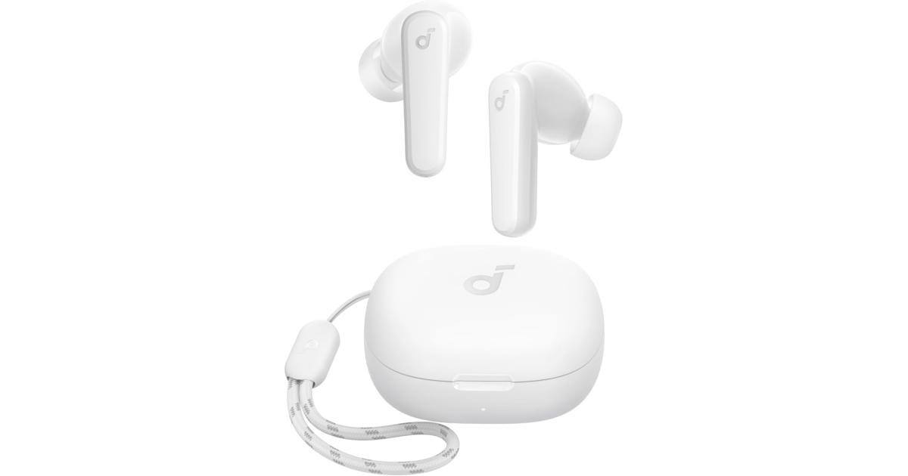
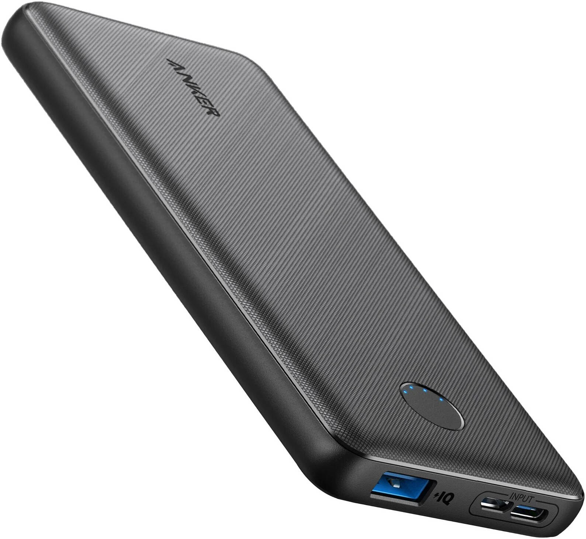
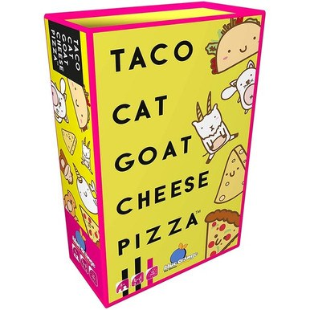
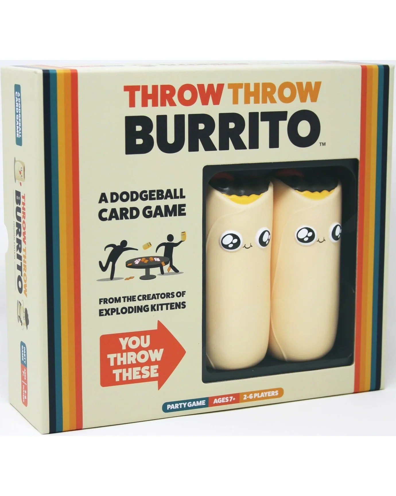
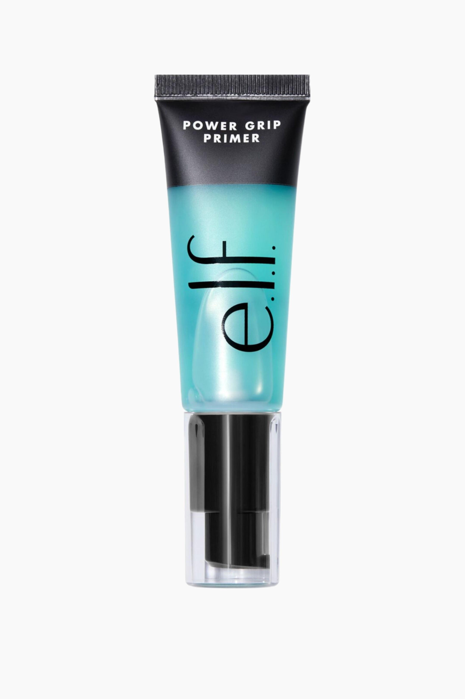
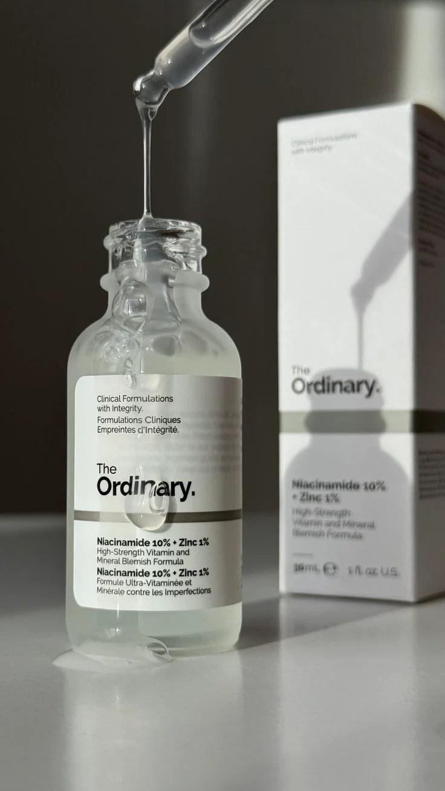
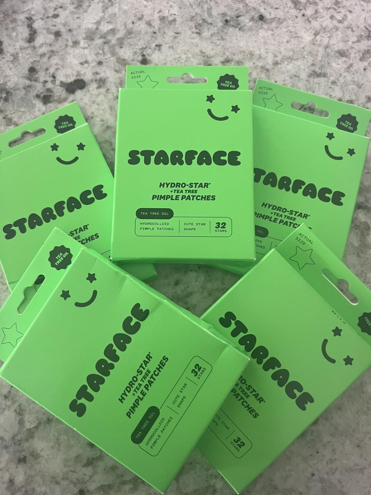

Best Gifts for Teens Under $25: 10 Picks Teens Actually Want
Teenagers are the hardest people on the Christmas list, and it is not really about the money. It is about credibility. Teens spot a no-name knockoff from across the room, and a gift that misses gets a polite smile and a permanent home in a drawer. So this list plays it straight: ten gifts from brands teens already buy for themselves — Govee, Soundcore, Anker, e.l.f., The Ordinary, Squishmallows — covering the four places teen life actually happens: their room, their phone, their friend group and their bathroom shelf.
A word on prices: we deliberately print none. Amazon prices on popular gear move daily before Christmas, so a number printed in October would be a small lie by December. Every pick was chosen because its usual street price sits in the under-$25 range; the button on each pick shows the live price. Shopping for the rest of the list too? The teachers' guide under $25 and the kids' guide under $25 are built the same way.
How these picks were chosen
- Recognizable brands only. Every pick is a name a teen would buy with their own money — no unbranded substitutes, and the fandom pick is the officially licensed version.
- Daily-use math. A teen's life runs on a phone battery, a pair of earbuds and the four walls of their room. Most of this list plugs into a routine that already exists, which is why it will not end up in the drawer.
- Social proof built in. Two of the ten are games designed for the friend group, because the gift that gets used at the sleepover beats the gift that gets used alone.
- Honest downsides. Each card lists real cons — what the spec sheet leaves out and where the budget shows. Under $25 buys a lot, not everything, and pretending otherwise is how gifts miss.
The room glow-up

1. Govee RGBIC LED Strip Lights (16.4 ft) — the room transformation
If one gift defines the current teen bedroom, it is this strip. RGBIC is the important word: unlike basic strips that show one color at a time, these display several colors along a single line — the rainbow-flow effect behind every gaming setup online. The Govee Home app handles scenes, segmented DIY color zones and a music mode that reacts to whatever is playing, and 16.4 feet runs a bed frame, a desk or a door outline. Control is by app and inline remote over Bluetooth, so setup takes minutes.
- Pros: genuine RGBIC multi-color effects, not single-color pretending; deep scene library and music sync in the app; 16.4 ft covers a bed plus desk in most rooms.
- Cons: Bluetooth-only — no Alexa or Google voice control (Wi-Fi is a different listing); adhesive can pull paint on removal, so use the included clips on painted walls.
Best for: gamers, streamers-in-training, and any teen whose room is their whole personality.
Check current price
2. Squishmallows Pokémon Pikachu (14 inch) — the licensed one, not the knockoff
Squishmallows are collectible currency in teen rooms, and the Pokémon line is where counterfeits flood in — which is why this pick is the genuine article: Jazwares' officially licensed 14-inch Pikachu, the big winking version, in the line's signature ultrasoft squish. Fourteen inches is the display size, substantial enough to anchor a bed or a shelf rather than vanish into a plush pile. It is also the rare teen gift with zero setup and zero wrong answers — nobody has ever been disappointed to be handed a giant Pikachu.
- Pros: officially licensed by Pokémon and made by Jazwares — face, colors and squish are right; the 14-inch size is the giftable one, for collectors and casual fans alike.
- Cons: spot-clean only — a display-and-hug plush, not a rough-and-tumble one; at 14 inches it takes real estate in small rooms.
Best for: Pokémon fans, plush collectors, and younger teens who still want something to unwrap and hug.
Check current price
3. DASH Mini Waffle Maker (Aqua) — snack-sized, dorm-ready
The DASH Mini is the small appliance all over social media for a reason: plug it in, wait for the indicator light, add batter, and a perfect four-inch waffle lands in about three minutes. The nonstick plates handle the obvious (waffles, hash browns) and the viral (chaffles, cookie dough, pizza pockets), a recipe guide is in the box, and the aqua finish photographs well on a dorm desk. It is Amazon's best-selling waffle iron — for a teen heading to a first dorm, a genuinely useful little machine disguised as a fun one.
- Pros: dead simple — one light, no settings to get wrong; compact enough for a dorm or a crowded counter; works well beyond waffles, which keeps it in rotation.
- Cons: one snack-size waffle at a time — feeding a crowd is a production line; plates are fixed, so cleanup is a wipe-down, not a sink wash.
Best for: snack-obsessed teens, dorm-bound seniors, and anyone whose kitchen era is just starting.
Check current priceTech they'll use every day

4. Soundcore P20i Wireless Earbuds (White) — the everyday carry
Earbuds are the most-used object in a teen's life — and the pair that gets lost, sat on or laundered needs a worthy replacement that does not cost a fortune. Anker's Soundcore P20i is the budget pick that keeps earning it: oversized 10mm drivers with genuinely big bass, 10 hours per charge and 30 with the case, Bluetooth 5.3, and an app with EQ presets plus a Find My Earbuds beep for the inevitable couch-cushion incident. A 10-minute top-up buys two hours of play, and the case's built-in lanyard loop prevents the most common earbud death of all.
- Pros: bass-forward sound teens actually prefer; 30 hours total with fast top-ups; app EQ and a find-my-buds feature rare at this price.
- Cons: no active noise cancelling at this price — isolation is passive only; no wireless charging for the case, USB-C cable only.
Best for: music-all-day teens, bus and train riders, and anyone on their second lost pair this year.
Check current price
5. Anker Power Bank PowerCore 10K (A1229) — for the phone that lives at 4%
Every teen runs the same daily experiment: how far a dying phone battery stretches between school, practice and home. This slim 10,000mAh Anker ends it — roughly two full phone charges in a bank barely thicker than the phone itself, with PowerIQ output, a four-dot battery gauge and a trickle-charge mode (double-press the button) for topping up earbuds. It recharges over USB-C or Micro-USB, so whichever cable is already in the backpack works. The least glamorous gift on this list, and the one most likely to be used three hundred days next year.
- Pros: two phone charges in a genuinely pocketable size; trickle mode handles earbuds properly; dual input means any cable in the bag can refill it.
- Cons: USB-A output only, so they need their own cable — no fast-charge magic here; a big tablet charge is possible but slow and eats most of the bank.
Best for: the teen whose phone is always at 4% — athletes, commuters and all-day scrollers.
Check current priceGames that survive the group chat

6. Taco Cat Goat Cheese Pizza — the ten-minute frenzy
The rules take thirty seconds: deal the deck, flip cards, chant "taco… cat… goat… cheese… pizza," and slap the pile the instant the word matches the picture. It sounds simple and plays like a contact sport — rounds run about ten minutes, two to eight players can join, and the special cards (gorilla, narwhal, groundhog) add actions that reliably derail the whole table. Published by Dolphin Hat Games, it is the rare game that pulls phones face-down without being asked — and small enough to live in a backpack and come out at lunch.
- Pros: learned in under a minute, finished in ten; scales from 2 players to a whole sleepover; compact box travels anywhere.
- Cons: slapping gets loud — rings off, and the table takes some hits; with two players it is fun but tamer than the full-table chaos.
Best for: friend groups, sleepovers, and families who want the teen at game night voluntarily.
Check current price
7. Throw Throw Burrito — the dodgeball card game
From the creators of Exploding Kittens, this is a card game that periodically erupts into a foam-burrito fight. Players race to collect matching sets; draw a Burrito Battle, War or Duel card and the two squishy burritos in the box start flying — get hit, take a bruise token. Two to six players, fifteen minutes, ages seven and up, and the only game-night entry that doubles as exercise. Gift it to a teen and you are really gifting the whole friend group an activity, which is the point.
- Pros: the physical comedy is real — this game gets quoted for weeks; quality squishy burritos survive serious abuse; fast rounds keep the whole group in.
- Cons: needs open space and a breakables check — lamps have fallen for less; the foam burritos pick up floor grime over time.
Best for: high-energy friend groups, sleepovers, and teens who claim board games are boring.
Check current priceThe skincare & beauty shelf

8. e.l.f. Power Grip Primer — the viral one, from the real brand
This is the primer all over every get-ready-with-me video: a clear gel that goes on tacky, grips foundation and skin tint in place for the whole school day, and finishes translucent on every skin tone. The formula carries niacinamide, is fragrance-free, and is vegan and cruelty-free — table stakes for this generation of buyers. The brand's own trick: wait about thirty seconds after applying for the grip to set, then go in with makeup. For a teen building a first routine, this is the single most recognizable bottle you can put in the bag.
- Pros: makeup genuinely lasts longer over it; translucent gel suits all skin tones; from the brand teens already trust, at drugstore scale.
- Cons: small tube (0.811 fl oz) — a daily wearer finishes it in a couple of months; the tacky feel is not for everyone, and skipping the 30-second set makes foundation pill.
Best for: makeup beginners and GRWM teens who want their look to survive the school day.
Check current price
9. The Ordinary Niacinamide 10% + Zinc 1% — the skincare starter serum
The Ordinary built its name on clinical formulas at prices a teen allowance survives, and this 30ml serum is the entry point: high-strength niacinamide (vitamin B3) aimed at blemishes and visible shine, with zinc to balance oil. It layers under moisturizer morning and evening and carries the minimalist lab-label look that dominates skincare shelves. Set expectations as the brand does: visible change is an 8-to-12-week project, not an overnight fix — and patch test first, as with any active.
- Pros: the real DECIEM formula at a genuinely teen-budget price; targets the exact concerns (breakouts, oil) teens search for; simple to slot into any routine.
- Cons: slow by design — no weekend miracles; do not layer with vitamin C in the same routine, per the brand's guidance; can pill under some sunscreens.
Best for: skincare-routine teens dealing with breakouts and oily skin.
Check current price
10. Starface Hydro-Star + Tea Tree Patches (32 count) — the pimple patch they wear out
Starface turned the worst part of a breakout into an accessory: star-shaped hydrocolloid patches that absorb fluid from a spot, shield it from picking fingers and makeup, and look deliberate enough to wear to school. This is the green tea-tree version — hydrocolloid plus tea tree oil for inflamed spots — in the 32-count pack, sold by Starface itself. Wear one six-plus hours on clean skin; the brand is refreshingly honest that these handle surface spots, not deep cystic acne. As a stocking stuffer or add-on to the serum above, it is the rare practical gift that reads as fun.
- Pros: genuinely useful and genuinely cute — the combination is the whole appeal; stops the picking that makes spots worse; the tea tree version targets angry, inflamed breakouts.
- Cons: one star covers one spot, so frequent breakouts burn through a pack; not a treatment for cystic or deep acne, by the brand's own admission.
Best for: teens who want the breakout handled and the handling photographed well.
Check current priceShopping for everyone else too?
The teen is one line on the list. The rest of the season's guides are built the same way: gifts for teachers under $25, gifts for kids under $25, gifts under $25 for men, gifts under $25 for women, white elephant gifts under $25, self-care gifts under $30, and stocking stuffers under $15. Buying ahead for the big day instead? The Black Friday watchlist tracks which categories are worth holding out for until November 27.
Quick answers
Are all of these gifts really under $25?
Every pick was chosen because its usual street price sits in the under-$25 range. Amazon prices move daily, though — especially in November and December — which is why this guide prints no prices. Tap any pick to see its current price before you buy.
What do you get a teen who says they want nothing?
"Nothing" usually means "nothing you would guess." Buy for the room and the routine instead of a hobby: the LED strips, the power bank and the earbuds on this list get used every single day by teens who claim to want nothing. A small pick from this list plus a gift card covers both bases — something to open, something to choose.
Is a gift card better than a physical gift for a teen?
A gift card is never wrong, and older teens honestly prefer the control. A physical gift wins when it is something they would not buy for themselves — room gear, a game for the friend group, a licensed plush. The strongest move is both: one physical pick that shows you know them, with a modest gift card tucked in for the thing only they can pick.
Which picks suit younger teens (13–15) versus older teens (16–19)?
Younger teens: the Pikachu Squishmallow, both party games, the waffle maker and the LED strips — social, room-based and age-proof. Older teens: the earbuds, power bank, primer, serum and pimple patches — everyday carry and self-care they are already buying for themselves. The strips, games and waffle maker cross over both ways, which is why they anchor the list.
When should I order teen gifts for Christmas?
Order by mid-December at the latest, and earlier for the brand-name picks — Govee strips, Squishmallows and The Ordinary are exactly what every other gift-buyer is ordering too, and the popular colors and scents sell through first. If a first-choice color is gone, the product itself usually is not; check the other options on the same listing before you panic-buy a substitute.